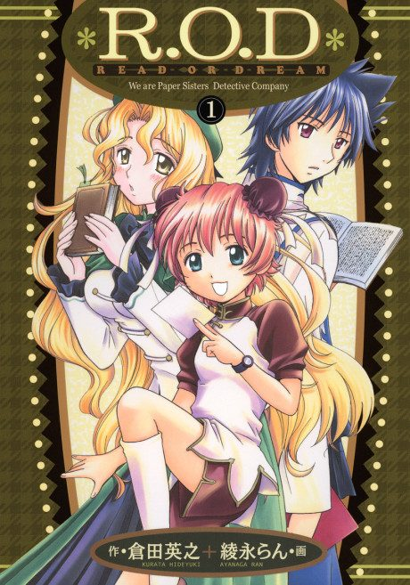

MangaOwn end
Anime
MangaOwn end
Anime
MangaR.O.D -THE TV-
R.O.D -THE TV-
AniList7.3
Animeter—
Episodes26 ep
MangaOwn end
Anime finished. Where does the manga pick up?
StatusOwn ending
R.O.D the TV is an original sequel to the Read or Die OVA, not an adaptation of a manga. The Read or Dream manga is a separate, non-canon side story.